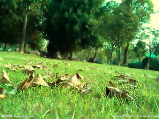

-

孩子喝牛奶的最佳时间，99%的妈妈都不知道！
牛奶是人们日常生活中最喜爱的饮食之一，它对人体有很多的好处，不仅含有大量的钙和氨基酸，给人体提供营养，还具有镇定安神的作用。同时多喝牛奶还能够使人的皮肤变好，心情变得开朗。牛奶中含有丰富的钙、蛋白质、维生素等营养物质，是一种容易被消化吸收的天然食物。所以也很很多妈妈坚持给孩子喝牛奶的原因。
了解 -

95后宝妈因强迫症致使出生8天男婴患败血症，家长别再这么做！
刘娟（化名）和老公结婚不久便怀孕了，于是就辞职在家安心养胎，生完孩子以后自己一个人在家带孩子，刘娟一直都有强迫症，孩子的所有的衣服要消毒清洗，床单要消毒，每次吃完饭以后都消毒......
了解 -
睡前故事 | 快乐的小蜣螂
青青草原上生活着很多昆虫。小蜣螂每天跟爸爸一起滚粪球，维护草原的干净和美丽，他感到很开心。可是，因为身上有异味，小蝴蝶、小瓢虫、小蚂蚱等小朋友都不愿意跟小蜣螂一起做游戏。小蜣螂觉得不快乐了。他该怎么办呢？
了解 -
睡前故事 | 偷懒的大公鸡
偷懒的大公鸡的故事说的是森林里的小河于涸了，泉水枯竭了，动物们找不到水喝。于是，动物们准备挖一口井取水喝，其它的动物都很卖力的挖井，只有轮到大公鸡挖井时，大公鸡一会装病，一会装脚崴了。大公鸡的谎言会被揭穿吗？
了解 -

睡前故事 | 红气球不见了
小老鼠阿布有个漂亮的红气球，他无论走到哪里都要带着它。但是，有一天红气球不见了！阿布在黑夜里四处寻找，想找到他的红气球。就这样，他先后遇上了一只猫头鹰、两只鸽子、三只蜗牛和四只虫子……这些好心的朋友们也帮助阿布找起了红气球。故事的最后，虽然红气球永远地不见了，不过，阿布再也不需要它了……因为，1+2+3+4，小老鼠阿布已经拥有了10个好朋友。
了解 -
宝宝恋爱了!孩子进入“婚姻敏感期”该如何引导?
最近后台收到一位妈妈的留言：她的女儿今年5岁。有一天，班级的一个男孩向她求婚了!原来，这个小男孩经常和她的女儿在一起玩。有一次，男孩说：“我们结婚好吗?”女儿想了想，同意了。男孩还说：“你不害怕吗?”女儿说：“有什么害怕的?”男孩说：“结婚后，要生小孩，会很疼的。”
了解